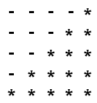

Algorithmsالحلقات المتداخلة في الخوارزميات
مفهوم الحلقات المتداخلة
الحلقات المتداخلة تسمى Nested Loops بالإنجليزية, و تعني تعريف حلقة بداخل حلقة أخرى.
في هذا الدرس ستتعرف على طرق أكثر تعقيداً للتعامل مع الحلقات, حيث أنك ستقوم بوضع الحلقات بداخل بعضهم البعض.
تعريف الحلقات بداخل بعضها البعض هو أصعب مرحلة ستمر بها خلال دراستك للخوارزميات لأنها الأكثر تعقيداً.
فهمك للحلقات المتداخلة سينمي قدراتك كثيراً على التحليل.
ستحتاج معرفة طرق التحليل التي ستتعلمها في هذا الدرس بشدة في المستقبل و خاصةً عندما تدرس المصفوفات.
ستلاحظ أن جميع التمارين الموضوعة في هذا الدرس مطلوب فيها رسم أشكال هندسية كالمربع, المستطيل و المثلث بواسطة رمز النجمة * و رمز الطرح -.
إذاً مهتمك في هذا الدرس ستكون إبتكار خوارزميات من شأنها رسم تلك الأشكال بأقل كود ممكن مهما كان حجم الأشكال الهندسية.
المعلومات التي يمكن استغلالها لحل تمارين الحلقات المتداخلة المعقدة
بشكل عام, أي شكل هندسي تنوي رسمه بواسطة الرموز يحتاج لحلقتين على الأقل:
حلقة للإنتقال من سطر لآخر, يقال لها الحلقة i.
حلقة للإنتقال من عامود لآخر, يقال لها الحلقة j.
مثال
لرسم الشكل التالي
يجب حساب و تدوين عدد الأسطر و الأعمدة الموجودة في كل سطر كالتالي لأنك ستحتاجهم.
إذاً هنا لاحظنا أنه عندنا 3 أسطر و كل سطر يحتوي على 5 أعمدة.
نستنتج أن كل نجمة ظاهرة في الرسمة يجب أن تكون موجودة على سطر و عامود محددين.
من أهم الأشياء التي يجب أن تلاحظها عندما تنظر إلى أي شكل هندسي و تدونها هي عدد جميع الأسطر و الأعمدة الموجودة فيها.
السبب في ذلك أنه لرسم أي شكل هندسي, يجب أن تكتشف العلاقة بين عدد الأسطر و عدد الأعمدة في كل سطر.
أمثلة
أحياناً يكون عدد الأسطر يساوي عدد الأعمدة الموجودة في الرسمة. ( هنا يكون الشكل يشبه المربع ).
و أحياناً يكون عدد الأسطر يساوي نصف عدد الأعمدة الموجودة في الرسمة. ( هنا يكون الشكل يشبه المستطيل ).
و يمكن أن يكون عدد الأعمدة يساوي ضعف عدد الأسطر الموجودة في الرسمة. ( هنا يكون الشكل يشبه المستطيل ).
و يمكن أن يكون عدد الأعمدة يساوي نصف عدد الأسطر الموجودة في الرسمة زائد 1 أو ناقص 3 إلى آخره.
لا تقلق إذا لم تفهم أي شيء الآن, لأنك ستفهم ما كنا نقصد لاحقاً من التمارين.
ملاحظة
قد لا يكون هناك أي علاقة بين عدد الأعمدة و عدد الأسطر الموجودة في الرسمة.
في هذه الحالة لا يمكنك الإعتماد على الحلقات لرسمها بشكل تلقائي.
الأشياء الثابتة التي يمكنك كتابتها مباشرةً عند ملاحظتها
أمثلة
for (int i=1; i <=5; i++)
أحياناً تلاحظ أن جميع النجوم تبدأ من العامود رقم 1, في هذه الحالة قم مباشرةً بتعريف الحلقة j كالتالي.
for (int j=1; ; j++)
أحياناً تلاحظ أن جميع النجوم تنتهي عند العامود رقم 5, في هذه الحالة قم مباشرةً بتعريف الحلقة j كالتالي.
for ( ; j <=5; j++)
إختلاف عدد الأعمدة بشكل متناسق
عندما يكون عدد الأعمدة مختلفاً في كل سطر و لكن بشكل متناسق فهذا يعني مباشرةً أنك يجب أن تعتمد على العداد i في المعادلة التي تحاول إكتشافها, و التي ستوصلك للشكل المطلوب.
تمارين شاملة حول الحلقات المتداخلة
التمرين الأول
إستخدم الحلقات لطباعة الشكل التالي
الحل و التفسير »
التمرين الثاني
إستخدم الحلقات لطباعة الشكل التالي
الحل و التفسير »
التمرين الثالث
إستخدم الحلقات لطباعة الشكل التالي
الحل و التفسير »
التمرين الرابع
إستخدم الحلقات لطباعة الشكل التالي
الحل و التفسير »
التمرين الخامس
إستخدم الحلقات لطباعة الشكل التالي
الحل و التفسير »
التمرين السادس
أكتب نفس البرنامج السابق بطريقة ثانية, الشكل المطلوب رسمه هو التالي
الحل و التفسير »
التمرين السابع
إستخدم الحلقات لطباعة الشكل التالي

الحل و التفسير »
التمرين الثامن
أكتب نفس البرنامج السابق بطريقة ثانية, الشكل المطلوب رسمه هو التالي
الحل و التفسير »
التمرين التاسع
إستخدم الحلقات لطباعة الشكل التالي
الحل و التفسير »
التمرين العاشر
إستخدم الحلقات لطباعة الشكل التالي
الحل و التفسير »
نصيحة
إياك أن تحفظ طريقة حل هذه التمارين أو غيرها حفظا غيباً لأنك يجب أن تفهمهم فهماً جيداً و ليس حفظاً.
و كما رأيت في الدروس السابقة, يمكنك أن تكتب الكود بطرق عديدة و تحصل على نفس النتيجة.
لذلك إياك أن تجبر نفسك على حفظ كود معين و حرمان نفسك من تنمية قدراتك على التحليل لأنك إذا صبرت على نفسك فإنك ستجد الجواب في النهاية.
خلاصة: تستطيع دائماً التفكير بطريقتك الخّاصة و إذا حاولت كثيراً و لم تتوصل إلى الحل بنفسك, عندها حاول إيجاد حلول عن طريق البحث في جوجل أو إسأل أي شخص تشعر أن عنده خبرة عالية في البرمجة و التحليل و إطلب منه أن يعلمك طريقة الحل لا أن يعطيك الجواب مباشرةً.


 محرر الويب
محرر الويب نظام الألوان
نظام الألوان محول الوحدات
محول الوحدات محلل عناوين الشبكات
محلل عناوين الشبكات